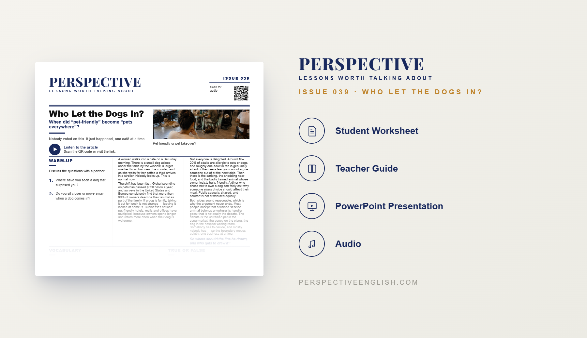

ISSUE 039
Pets ESL Lesson
When did “pet-friendly” become “pets everywhere”?
A ready-to-teach ESL lesson exploring pets in public spaces, pet-friendly businesses, service animals and whose comfort should come first, with reading, listening, vocabulary, discussion and critical-thinking activities for B1–B2 English learners.
Collection 07 includes Issues 036–040.

LESSON PREVIEW

ABOUT THIS LESSON
About This Pets ESL Lesson
Dogs are appearing in more cafés, hotels, malls, offices and other shared spaces. For many owners, pets are part of the family, and businesses have responded by becoming increasingly pet-friendly.
This B1–B2 Pets ESL lesson explores the other side of that shift too. Students consider allergies, fear of dogs, barking, shedding, badly trained animals and the question of whether one person’s choice to own a pet should affect everyone else sharing the space.
The lesson distinguishes trained service animals from ordinary pets and asks students to decide where the boundary should be drawn. In the main critical-thinking task, groups create one pet policy covering twelve different public places before defending the rules they chose.
FROM THE ARTICLE
WHAT'S INCLUDED
What's Included in Who Let the Dogs In?
- Magazine-style B1–B2 ESL student worksheet
- Original pets and public spaces reading and audio recording
- Vocabulary and reading comprehension activities
- Discussion questions about pet ownership, comfort and shared spaces
- Where Is the Line? critical-thinking activity
- Pet-policy decisions for twelve different public places
- Café pet-policy speaking challenge and writing prompt
- Teacher guide and complete answer key
- Ready-to-use classroom presentation
GET THE COMPLETE LESSON
Ready to Teach Who Let the Dogs In?
Get the complete Pets ESL lesson individually, or save with Perspective Collection 07 featuring Issues 036–040.
Secure checkout and instant digital delivery through Payhip.